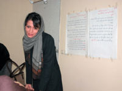

|
|
|
Browsing
Contact Us |
Campaigners |
Face to Face |
Tribune |
Interview |
News |
On the Web |
One Million |
Report
Farsi | Français | German | Italian | Spanish | العربية Also in this section
|
 Look in the Mirror to Find Your Saviour*Saturday 1 December 2007 By: Sara Loghmani Translation by: Roja Bandari We pay out of pocket for trips to other cities. We print the booklets with the $5 membership fees. Nobody asks for compensation for the articles on the website. We hold the workshops in the homes of volunteer women. We also get donations and prayers from women who have lost hope and have put their faith in our work. What would we need 15 million euros for? (1) Our workshops don’t need video projectors. To cut down on cost, we do not print nor photocopy our notes and displays; they are handwritten with markers. We have bought a few different colors of markers to make the notes more visually appealing. That, we knew we could afford. We take over-night bus rides when traveling to other cities, so the seats on the bus become our nightly accommodations. Upon arrival, we spend the day as guests in the homes of young and energetic local women. They offer us their homemade food and insist on paying for our local taxi ride. We feel indebted and grateful for their kind and sincere hospitality every time. The One Million Signatures Campaign does not require a wealth of money; it requires a wealth of patience and persistence. We hold the workshops in local homes; a different home every week. We move the furniture so the participants can see each other and the wall better. We tape the display sheet to the wall. You can see the tapes from previous workshops still stuck to the paper. I can count the layers of tapes on this paper and tell you how many workshops we have held so far; how many women’s homes we have visited; with how many people we have talked about the laws; and how many times a woman’s tears trickled down her face and her eyes told us that these laws have touched her life as well. Each time I see the wear in the paper, I tell myself, “We will type and print these notes next time.” When the activists from other cities came to Tehran, on the lunch table they saw spaghetti with imitation meat (made of soy) and kashk-e-bademjan (2) with no walnuts. Even the pickled vegetables were provided by one of the women who had previously volunteered her home for a meeting. I’m talking about Akram Khanoum. I remembered my mother’s words, “making kashk-e-bademjan means making a dish with no money.” This doesn’t need 15 million euros, does it? The Campaign needs a compassionate heart. The Campaign needs the support of the poor 80-year-old woman, who tells us, “You have arrived so late! Now that I am about to die! Where were you when they forced me to marry my husband? When my husband was beating me I would whisper ‘Nobody cares for the flowers. Nobody cares for the goldfish. Nobody wants to believe that the garden is dying…(3).’” A 60 year old woman comes to my office with her two daughters and two sons. They are asking me what they can do so their father can’t throw their mother out of the house after 45 years of marriage. They say, “He has married another woman and has brought her home; a home that our mother has worked in for 45 years, where she has raised her children, where she has been a wife for her husband and a maid for the house. All of her Mehrieh (4) is $4000, which he is giving to her and is saying let’s go get a divorce tomorrow.” Daughters and sons are talking and the woman is watching in silence. How can I look her in the eye? She is like my mother. She is like your mother. Her whole identity is her home and her children. Everyone knows her as Haj-agha’s wife, and now Haj-agha wants to kick her out of the house. Her eyes are filled with plea. Her chador slides back and a bruise appears on the side of her face. She thinks if she is too humiliated to speak, at least she must look straight in my eyes with all her power. With her eyes she wants to say, no she wants to shout, to cry out and ask how is she going to explain this to her grandchildren; To her daughter-in-laws and son-in laws? Where is she going to live? Who is the young woman who is in her home now? Mother wants her share; her share from life, from suffering. Can secret international forces help her?! Tell them to do it! Does 15 million euros restore her good name? We have lost all that we could lose. We are walking without a light… How much must one pay? When my grandfather died two years ago I was wondering, with 5 sons and three daughters, how much of his small house will be left to his wife, my grandmother (5). With my calculations, one-eighth of the building (not the land) would have been $8000. What could she do with that money? This was the fruit of 50 years of her life in that house, working for her husband and seven children. My father said the old building was worth nothing and it was only the land that had value. I didn’t cry when grandma died within a month of my grandfather’s death. I didn’t cry when my trust was dangling from the feeble rope of justice and they were shattering the hearts of my lanterns all over the town; when they were blindfolding the eyes of my innocent love with the black rag of law. I wish we could move away from in between the extreme left and the fundamentalist right so the sound of their clash could deafen the world’s ears. One side says “you accept the bases of this government and just want to make inheritance and Dieh equal,” the other side says “Islam is in danger.” One side says “you think this government will care about one million signatures and change anything?” the other says “western propaganda has called Iranian laws unjust to women.” This one says “you think you can have a revolution from coffee-shops?” the other cries out “they want to have a soft overthrow.” And I think to myself, ‘in the land of midgets where the standards have always traveled on the orbit of zero, why should we stop? Why?’ Step out of the world of nuclear weapons negotiations, U.S., the Netherlands and the west; I want to tell you something. I suggest that you seal the borders and raise the walls so the western media can’t hear, so no one can hear this but you. Political party members! Parliament members! Artists! Athletes! Keyhan Newspaper! University Professors! Leftists! Conservatives! Government Supporters! Opposition groups! Gather around so I can tell you what happens to your sisters and mothers in the backrooms of their homes because of the law of Obligatory Sexual Obedience (Tamkin). I want to tell you that when your daughter was 9 months pregnant and her husband forcefully slept with her and she had to go to the hospital, she couldn’t tell you and she couldn’t tell the court because she had to be sexually obedient. O Friend! O Brother! When you get to the moon, remember to write the history of the massacre of roses. It’s a cold winter night. I’m sitting next to the heater with Jelveh and we are drinking tea. A volunteer calls and tells us she has a religious get together with some other women tomorrow and wants to talk to her friends, neighbors and family about the discrimination in the law and about the campaign. She needs booklets. We put down our cups and drive to Apadana. I’m sitting in the car and watching Jelveh talk to the woman in front of the apartment building. Jelveh smiles and hands her the booklets. I’m waiting for the woman to give her a few sheets of signatures but Jelveh comes back empty-handed. She sees the question in my eyes and tells me, “She said she likes the signatures that she has collected and doesn’t want to give them up yet.” She is a housewife and mother of three. Yesterday in the grocery store she had collected signatures from five other women and her husband had collected thirty from his co-workers. Take the 15 million euros – it is all yours! The decision to collect one million signatures is the will of the men and women of this land. The petition is signed by the people from this country, because we think if they don’t want it, nothing can change. The resources of this campaign are the determined Iranian girls and boys who want to improve their own environment. A few hundred million dollars, euros, dinars, or rials, can’t soothe their pain. The wealth of the campaign is not monetary; the wealth of this campaign is the free people of Iran who are confident in each other and hopeful for the future. Tomorrow comes soon because someone is coming, someone is coming, someone who is with us in her heart who is with us in her breath, in her voice, you can’t arrest her arrival, handcuff it, or jail it … and she will spread the table, … and she will give us our share. I have had a dream…. *Note: This article was written on March 11, 2007 and in response to the accusations printed and generated by Keyhan Daily paper in Tehran. The paper falsely claimed that the campaign has received 15 million euros of financial support from the Netherlands. Accusations of links to foreign countries are often used as a tool to discredit and silence civil activists. For a detailed financial report of the Campaign visit: (1) Reference to a Keyhan newspaper article, falsely accusing the campaign of receiving 15 million euros from the government of Netherlands. (2) Kashk-e-Bademjan is a dish made from eggplants. (3) All poems are from late Iranian poet Forough Farrokhzad (4) Mehrieh is the agreed-upon amount of money a woman is entitled to when she gets a divorce. (5) According to current Iranian law, a woman does not inherit any portion of land from her husband. Forum posts:2 |